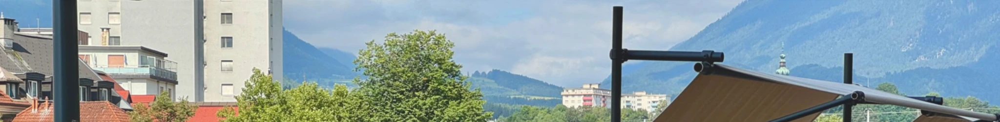

BUREAU_BLIEM
HOUSE O
- Year
- 2024–ongoing
- Status
- in construction
- Type
- private
- Location
- Paternion / Austria
- Client
- private
Complete renovation and modernization of a family home.
Exterior updates in progress
Interior updates in progress
Additional structures in progress

KÖTSCH MA
- Year
- 2024
- Status
- –
- Type
- competition
- Location
- Carinthia / Austria
- Client
- Kötschach-Mauthen
This project was developed as part of an ideas competition for a landmark sculpture at the entrance to Kötschach-Mauthen. The task was to design a contemporary, highly visible object that reflects the town’s identity and integrates the claim “So viel mehr.” The sculpture is conceived for roadside placement, designed to be perceived from both directions and from a distance. Only wood and metal were permitted as materials, with requirements for durability, low maintenance, and resistance to weather and snow loads. The design combines modern form language with references to the Alpine context and the municipality’s visual identity.